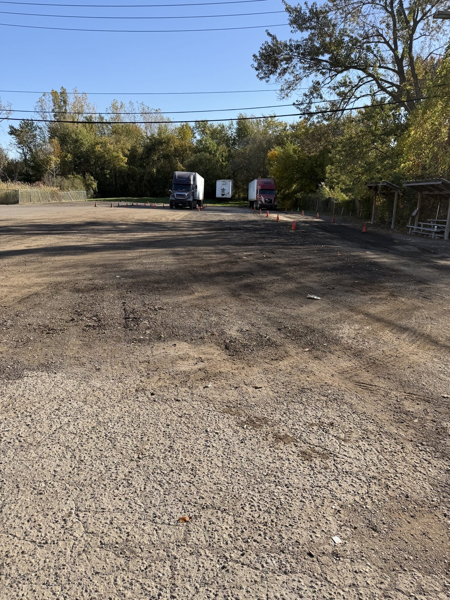
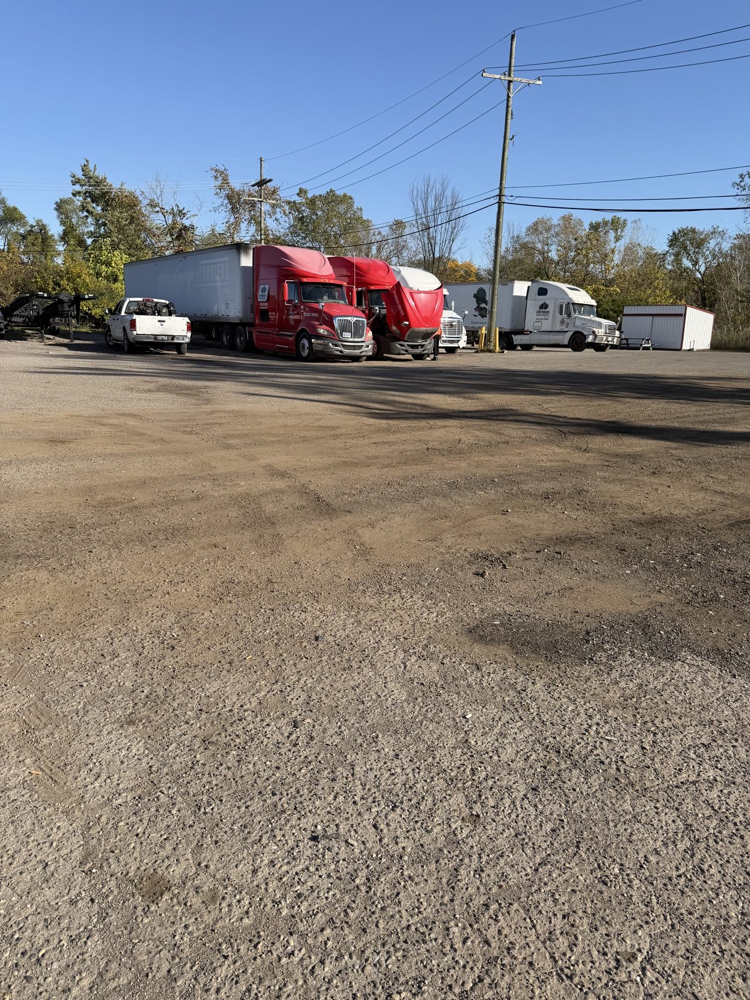

How I Got Here
I spent about five years in IT: help desk, desktop support, provisioning, and MSP field engineering. I got good at it. Diagnosing the hard problems, keeping systems running, working on my own out in the field with clients: that was the part I liked. But somewhere along the way, the keyboard stopped being the point, and a different road started looking like the honest one.
In September 2026 I made the call: go get my Class A CDL and become a truck driver. Not a fallback. Not a detour. The destination.
Why the Road
My dad was a truck driver. I grew up around that life: the rhythm of it, the independence, the pride of doing the job right when nobody's watching. Getting behind the wheel myself feels less like starting over and more like going down a road that was always mine. It makes me happy in a way I can't really dress up with fancier words than that.
The Journey So Far
Full funding cleared for the 160-hour / 16-day CDL-A program at Suburban Truck Driver Training in Romulus, Michigan.
7 AM start. Classroom work first: General Knowledge, air brakes, and combination vehicles.
Cleared all three of the school's classroom exams in the morning, then passed all three state sections at the SOS (General Knowledge, Air Brakes, and Combination Vehicles) and walked out with the permit.
Skills week: pre-trip inspection, and a whole lot of straight-line backing. One perfect rep early, then the honest work of making it repeatable.
More drills building on the straight-line work: offset backing and 90-degree backing, rep after rep until the setups start to feel automatic.
Back on the 90-degree backing for most of the week, with one day spent finishing up offsets.
Off the backing drills and into pre-trip: running the full walk-around and tightening up the wording ahead of the state test.
Out of the yard and onto the road: started in a business park learning the gears, then moved on to surface streets, local highways, and freeway driving, finding missed gears and keeping the truck rolling without a stall.
From the Yard
Day two of skills week: straight-line backing practice at the Suburban yard.


What Comes With Me
Five years of field work transfers better than you'd think. Troubleshooting is troubleshooting. A tractor has more in common with a misbehaving server than people give it credit for. The pre-trip inspection is just a checklist run by somebody who knows that skipping steps is how things break at the worst possible time. And years of working independently out in the field, talking to non-technical people, and owning whatever I found when I showed up? That's basically the job description for a professional driver.
What's Next
Skills training, road training, and the state skills test, then a licensed Class A driver. The tech doesn't disappear; the homelab stays up and the curiosity doesn't turn off. It just moves to the hobby shelf, where it belongs while I'm earning my miles.